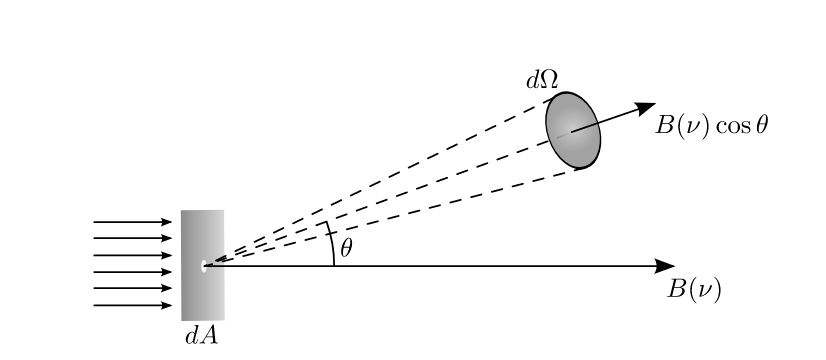

Forrige side🙂 🙁Intensitet
Vi skal nå gå over til intensitetsbegrepet. Intensiteten er energien per arealenhet, per tid, per bølgelgende og per romvinkel som går gjennom et areal og inn i en gitt retning θ: $$I(\lambda)=\frac{\Delta E}{\cos{\theta}\Delta A\Delta t\Delta \lambda\Delta \Omega}$$

Nærmere forklaring finner du i denne videoen
Neste side